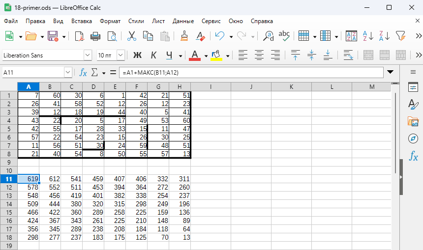
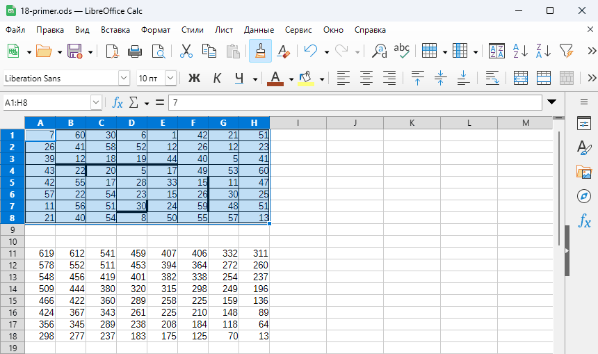
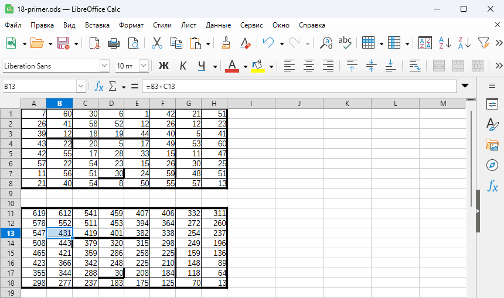
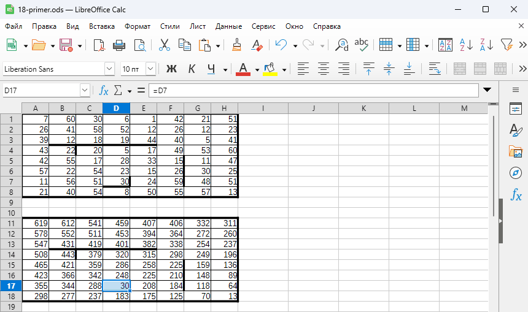
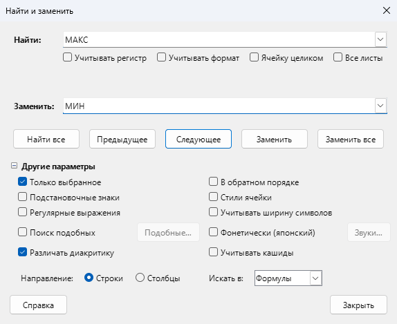
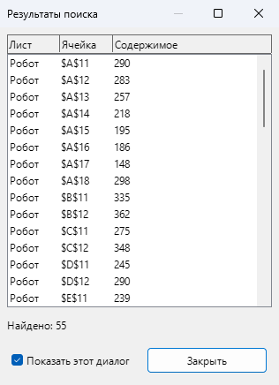
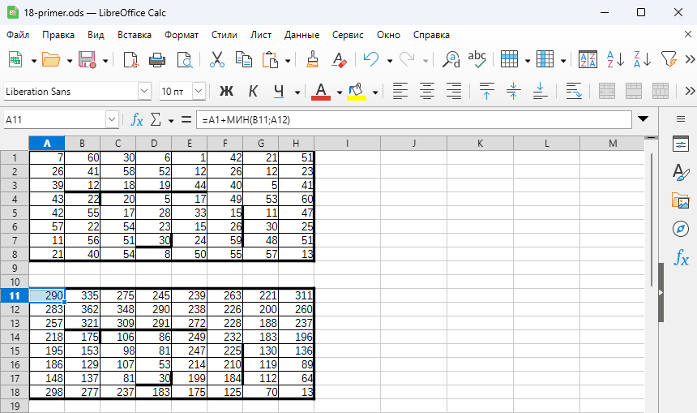

№18. Робот собирает монеты (электронные таблицы)¶
Коротко
Рядом с полем построить поле сумм от конца пути: = монета + МАКС(справа; снизу). У стены остаётся
одна сторона, в конечной клетке — только монета. Ответ — сразу в копии левой верхней клетки.
Потом Ctrl+H: МАКС → МИН.
Как узнать задачу¶
- «Квадрат разлинован на N×N клеток… Робот может перемещаться вправо или вниз… В каждой клетке лежит монета достоинством от 1 до 100… Определите максимальную и минимальную денежную сумму».
- Есть стены — на листе это жирные линии между клетками; через стену Робот пройти не может.
- В формате 2027 Робот идёт, пока может: конечная клетка — та, у которой справа и снизу стена или край поля. Таких клеток может быть несколько.
- Ответ — два числа: обычно сначала максимум, потом минимум, но бывает и наоборот (ЕГЭ-2023 и 2024, Дальний Восток) — порядок читать в условии.
Шаблон¶
Поле — в клетках A1:H8. Копию-«поле сумм» стройте так, чтобы под ней была пустая строка, а справа — пустой
столбец (например, A11:H18: строка 19 и столбец I пустые). Тогда одна формула подходит для всего поля — и для
последней строки, и для последнего столбца: пустые клетки МАКС и МИН просто не учитывают.
В каждой клетке копии — лучшая сумма от этой клетки до конца пути. Поэтому конечных клеток может быть сколько угодно: каждая учтётся сама, а ответ всегда в одном месте — в копии старта. Недоступные клетки чистить не нужно: путь из старта в них не заходит.
| Шаг | Что сделать |
|---|---|
| 1 | В A11 (это копия клетки A1): =A1+МАКС(B11;A12) — монета + лучшая сумма из клетки справа (B11) или снизу (A12). Протянуть вправо и вниз до H18 |
| 2 | Стены — на копию. Выделить поле A1:H8, нажать кисть «Копировать формат» и провести по A11:H18 — рамки перенесутся, формулы копии останутся (или скопировать поле и Ctrl+Shift+V «Вставить как…» → «Только формат»). Теперь стены видны и в копии |
| 3 | Клетки перед стеной. Стена справа от клетки → =монета+снизу; стена снизу → =монета+справа. Стена закрывает тот ход, через который проходит |
| 4 | Конечные клетки — справа и снизу стена или край: =монета, без МАКС. Правую нижнюю менять не нужно — справа и снизу от неё пусто |
| 5 | Ответ — в A11 (копия старта). Это максимум — записать |
| 6 | Выделить копию, Ctrl+H: МАКС → МИН, «Заменить все». В A11 — минимум |
LibreOffice
Аргументы разделяются ;. В окне Ctrl+H поиск должен идти в формулах
(«Другие параметры → Искать в: Формулы» — так по умолчанию). Если формула показывается текстом — проверьте,
что она начинается с =, а ячейка не в формате «Текст».
Пример с разбором¶
Задача (своя, в формате 2027). Робот стартует в левой верхней клетке и ходит вправо и вниз, пока может; стены — жирные линии. Конечная клетка — та, у которой справа и снизу стена или край поля. Найдите максимальную и минимальную сумму монет среди всех возможных итоговых сумм (с начальной и конечной клеткой).
| A | B | C | D | E | F | G | H | |
|---|---|---|---|---|---|---|---|---|
| 1 | 7 | 60 | 30 | 6 | 1 | 42 | 21 | 51 |
| 2 | 26 | 41 | 58 | 52 | 12 | 26 | 12 | 23 |
| 3 | 39 | 12 | 18 | 19 | 44 | 40 | 5 | 41 |
| 4 | 43 | 22 | 20 | 5 | 17 | 49 | 53 | 60 |
| 5 | 42 | 55 | 17 | 28 | 33 | 15 | 11 | 47 |
| 6 | 57 | 22 | 54 | 23 | 15 | 26 | 30 | 25 |
| 7 | 11 | 56 | 51 | 30 | 24 | 59 | 48 | 51 |
| 8 | 21 | 40 | 54 | 8 | 50 | 55 | 57 | 13 |
Скачать поле в .ods — чтобы повторить разбор в LibreOffice.
Решение.
- В A11:
=A1+МАКС(B11;A12), протягиваем до H18. Переносим стены на копию кистью. - Клетки перед стенами:
- у B3:E3 стена снизу (копии B13:E13): вниз нельзя →
=B3+C13(«только справа»), протянуть до E13; - у B4 стена справа (копия B14): вправо нельзя →
=B4+B15(«только снизу»); - у F5:F7 стена справа (копии F15:F17):
=F5+F16, протянуть до F17 («только снизу»).
- у B3:E3 стена снизу (копии B13:E13): вниз нельзя →
- Конечные клетки: D7 (стены справа и снизу) — в копии D17:
=D7; H8 — угол поля, копия H18 уже «только монета». - В A11 — 619. Ctrl+H,
МАКС→МИНв копии → в A11 290.
Недоступная зона C4:E4 (у C4 стены сверху и слева) ничего не портит: из A1 туда не попасть, и сумма в A11 её не учитывает.
Ответ: 619 290.
По шагам, с картинками (LibreOffice 26.8, файл 18-primer.ods).
1. Формула и протягивание. В A11 набрать =A1+МАКС(B11;A12), Enter. Выделить A11 и потянуть
маркер (квадратик в правом нижнем углу выделения) вправо до H11, затем, не снимая выделения A11:H11, — вниз до
строки 18. Строка 19 и столбец I пустые, поэтому в H18 получится =H8+МАКС(I18;H19) — только монета.

2. Стены — на копию. Выделить поле A1:H8, нажать кисть «Копировать формат» на панели инструментов и провести мышью по A11:H18.

Рамки перенеслись, формулы копии остались. Теперь видно, где формула ведёт сквозь стену: у B13 (копия B3) стена
снизу, а в формуле ещё МАКС(C13;B14) — B14 за стеной.
3. Правки у стен. Стена снизу — «только справа»: в B13 =B3+C13, протянуть до E13. Стена справа —
«только снизу»: в B14 =B4+B15, в F15 =F5+F16, протянуть до F17. Протягивать — только по клеткам с той
же стеной.

4. Конечная клетка. У D7 стены справа и снизу — в D17 =D7, только монета. В A11 — 619, это
максимум.

5. МАКС → МИН. Выделить копию A11:H18, Ctrl+H. «Найти» — МАКС, «Заменить» — МИН.
Галочка «Только выбранное» стоит сама (выделен диапазон), «Искать в» — «Формулы» (так по умолчанию).
«Заменить все».

Откроется окно «Результаты поиска» — сколько клеток изменено. Его можно закрыть.

МАКС)6. Минимум. В A11 теперь =A1+МИН(B11;A12) — 290.

Что будет, если ошибиться — проверено на этом поле в LibreOffice
| Ошибка | Ответ |
|---|---|
| всё верно | 619 290 |
в D17 оставили МАКС(справа; снизу) — путь «прошёл» сквозь стены D7 |
619 342 |
| перепутали сторону: у стены снизу — «только снизу», у стены справа — «только справа» | 594 212 |
+ вместо ;: =A1+МАКС(B11+A12) — ошибки нет, но складываются обе дороги |
63 206 63 206 — больше 1500 (15 клеток пути по 100) быть не может |
Проверка программой
На экзамене стены видны только на листе, поэтому программа неудобна. Но для тренировки ответ можно проверить: стены записываются вручную в два множества. Программа считает от старта — это второй способ, ответ тот же и совпадает с полным перебором всех 361 пути.
# №18: проверка ответа программой (на экзамене стены видны только на листе — основной способ таблица).
# Робот идёт из левой верхней клетки вправо/вниз; конечные клетки — те, где справа и снизу стена или край.
# Ответ: 619 290
grid = [
[7, 60, 30, 6, 1, 42, 21, 51],
[26, 41, 58, 52, 12, 26, 12, 23],
[39, 12, 18, 19, 44, 40, 5, 41],
[43, 22, 20, 5, 17, 49, 53, 60],
[42, 55, 17, 28, 33, 15, 11, 47],
[57, 22, 54, 23, 15, 26, 30, 25],
[11, 56, 51, 30, 24, 59, 48, 51],
[21, 40, 54, 8, 50, 55, 57, 13],
]
# Стены: (строка, столбец) клетки, нумерация с 0
wall_down = {(2, 1), (2, 2), (2, 3), (2, 4), (6, 3)} # стена под клеткой
wall_right = {(3, 1), (4, 5), (5, 5), (6, 5), (6, 3)} # стена справа от клетки
n = len(grid)
def robot(best): # best — это max или min
s = [[None] * n for _ in range(n)] # s[i][j] — лучшая сумма до клетки; None — не дойти
for i in range(n):
for j in range(n):
came = [] # откуда можно прийти
if i > 0 and (i - 1, j) not in wall_down and s[i - 1][j] is not None:
came.append(s[i - 1][j]) # сверху
if j > 0 and (i, j - 1) not in wall_right and s[i][j - 1] is not None:
came.append(s[i][j - 1]) # слева
if i == 0 and j == 0:
s[i][j] = grid[i][j] # старт
elif came:
s[i][j] = grid[i][j] + best(came)
ends = [] # конечные клетки: дальше не пойти ни вправо, ни вниз
for i in range(n):
for j in range(n):
stop_right = j == n - 1 or (i, j) in wall_right
stop_down = i == n - 1 or (i, j) in wall_down
if stop_right and stop_down and s[i][j] is not None:
ends.append(s[i][j])
return best(ends)
print(robot(max), robot(min))
Разновидности¶
| Условие | Что изменить |
|---|---|
| без стен, из левой верхней в правую нижнюю | только шаги 1, 5, 6 |
| со стенами, конечная — только правая нижняя | шаги 1–3, 5, 6, и тупики очистить: клетки, откуда до правой нижней не дойти (другие «углы» со стенами справа и снизу и всё, откуда можно уйти только в них). Иначе тупик даст «только монету» и станет ложным финишем |
| Робот идёт, пока может; конечных клеток несколько (ЕГЭ, 2027) | весь шаблон — все конечные клетки учтутся сами |
| старт в другом углу: из левой нижней вправо и вверх | «куда пойти» — справа и сверху: копия A11:H18, в A18 (копия старта A8) =A8+МАКС(B18;A17); пустая строка — над копией; конечные клетки — стена справа и сверху; ответ — в A18 |
| из правой нижней влево и вверх, из правой верхней влево и вниз | «куда пойти» — слева и сверху (снизу): копия B11:I18, пустой столбец — слева от копии; в копии старта =H8+МАКС(H18;I17) (=H1+МАКС(H11;I12)); конечные — стена слева и сверху (снизу) |
| старт — в клетке (x; y) (СтатГрад, 2025) | x — столбец, y — строка. Копия — на всё поле, как обычно; ответ — в копии клетки (x; y): старт B4 → ответ в B14 |
| стартов несколько (стены слева и сверху), финиш — правая нижняя, k запусков с разными стартами | тот же шаблон, тупики очистить; копия каждого старта — его лучшая сумма: k наибольших =НАИБОЛЬШИЙ((B12~E15~…);1)+… / после замены на МИН — k наименьших НАИМЕНЬШИЙ |
| финиш — клетки нижней строки, номер столбца кратен 3 | удобнее счёт от старта (см. «Подробнее»): ответ — МАКС по копиям C, F, I, …: номера столбцов с 1 |
| k запусков, конечные клетки разные — сумма за все запуски | нужна сумма в каждой конечной клетке отдельно — счёт от старта (см. «Подробнее»): =НАИБОЛЬШИЙ((E17~I18~…);1)+…+НАИБОЛЬШИЙ(…;k) (~ объединяет клетки в один список); минимум — после замены на МИН то же с НАИМЕНЬШИЙ |
| «клетки с чётной монетой Робот не забирает» | вместо монеты ЕСЛИ(ОСТАТ(A1;2)=0;0;A1): =ЕСЛИ(ОСТАТ(A1;2)=0;0;A1)+МАКС(B11;A12) (и в правках у стен) |
| ход на любое число клеток вправо / вниз | МАКС по всему отрезку строки справа и столбца снизу: в A11 =A1+МАКС(B11:$I11;A12:A$19) и протянуть — $ держит конец отрезков (на пустом столбце I и пустой строке 19) |
| запрещённые клетки (тёмные, голубые) | считать, что запрещённая клетка обнесена стенами со всех сторон: её копию очистить — соседи перед ней сами возьмут другую сторону (МАКС и МИН пустую клетку пропускают); если финиш один — проверить, не появились ли тупики |
| поле — прямоугольник N × M | тот же шаблон: копия того же размера |
| «энергия»: расход = сумма чисел; минимальный запас, чтобы дойти до какой-нибудь финальной клетки | МИН-формулы; ответ — в копии старта |
| минимальный запас, чтобы хватило до любой финальной клетки | нужна дорога до каждой финальной отдельно — счёт от старта (см. «Подробнее»): МИН-формулы, ответ — МАКС по финальным клеткам (самая «дорогая» из самых дешёвых дорог) |
Подробнее: счёт от старта
Поле сумм можно строить и в обычную сторону — от старта: в каждой клетке лучшая сумма от старта до неё. Так считают, когда нужна сумма в каждой конечной клетке отдельно (k запусков с разными конечными клетками, «до любой финальной», финиш — столбцы, кратные 3) и в необычных разновидностях ниже.
| Шаг | Что сделать |
|---|---|
| 1 | Копия с B11 (пустая строка над ней и пустой столбец слева): =A1+МАКС(A11;B10) — монета + лучшая сумма слева или сверху; протянуть до I18 |
| 2 | Стены — на копию, как в шаблоне |
| 3 | Клетки за стеной. Стена сверху клетки → =монета+слева; стена слева → =монета+сверху |
| 4 | Недоступные клетки — со стенами и сверху, и слева, а также те, куда можно попасть только через них, — очистить (Delete) |
| 5 | Конечные клетки — справа и снизу стена или край. В свободной клетке: =МАКС(…) по ним всем — максимум |
| 6 | Выделить копию и клетку с ответом, Ctrl+H: МАКС → МИН — минимум |
На поле примера: правки C14 =B4+B14, H15:H17 =G5+H14, F17 =E7+F16, E18 =D8+D18; очистить D14:F14;
ответ =МАКС(E17;I18) → 619, после замены → 290. Ловушки этого способа:
- забыта конечная клетка — взяли только правую нижнюю I18: 619 342 (самая дешёвая дорога останавливается в D7). На всех 22 задачах Решу ЕГЭ с несколькими конечными клетками ответ «по одной правой нижней» неверен (60260: минимум 893 вместо 718);
- не очищена недоступная зона D14:F14 — формула в C4 даёт «монета + пусто», путь как будто начинается с середины поля: 619 106. Может вырасти и максимум (89755: 2522 вместо 2476); зона есть почти во всех заданиях ЕГЭ 2025–2026 (КомпЕГЭ, досрочная волна 2026: 2789 вместо 2575);
- очистили только запрещённую клетку — клетка за ней, куда больше не из чего прийти, станет ложным стартом (КомпЕГЭ 2527, голубые клетки: минимум 4274 вместо 10452).
Подробнее: необычные разновидности (СтатГрад, сборники, старые ЕГЭ)
Здесь — счёт от старта (см. выше): поле A1:H8, копия с B11; клетка поля B2 — это копия C12, слева от неё B12 (поле A2), сверху C11 (поле B1), по диагонали B11 (поле A1).
| Условие | Формула в C12 и что ещё сделать |
|---|---|
| ход ещё и по диагонали вправо-вниз | =B2+МАКС(B12;C11;B11); если можно и влево-вниз — добавить D11 (справа-сверху) и оставить пустой столбец справа от копии |
| шаг стоит модуль разности чисел (сумму, большее из двух) | =МИН(B12+ABS(B2-A2);C11+ABS(B2-B1)) (B12+B2+A2, B12+МАКС(B2;A2)) — нужен барьер (ниже) |
| шаг вниз вдвое дороже; шаг вправо −15, вниз −20, по диагонали −10 | =МАКС(B12-B2;C11-2*B2); =B2+МАКС(B12-15;C11-20;B11-10) — барьер |
| число идёт в сумму, только если оно больше предыдущего; энергия растёт или падает на число | =МАКС(B12+ЕСЛИ(B2>A2;B2;0);C11+ЕСЛИ(B2>B1;B2;0)); вместо 0 — -B2; края — как в «Барьере» |
| условие на шаг: вправо — в число той же чётности, вниз — другой | =B2+МАКС(ЕСЛИ(ОСТАТ(B2;2)=ОСТАТ(A2;2);B12;-100000);ЕСЛИ(ОСТАТ(B2;2)<>ОСТАТ(B1;2);C11;-100000);B11); недоступных — =СЧЁТЕСЛИ(копия;"<0") |
| число маршрутов, перепад высот на шаге не больше 50 | в старте 1, дальше =ЕСЛИ(ABS(B2-A2)<=50;B12;0)+ЕСЛИ(ABS(B2-B1)<=50;C11;0); недоступных — =СЧЁТЕСЛИ(копия;0) |
| максимум и сколько нечётных клеток на этом пути | два числа в одном: =B2*1000+ОСТАТ(B2;2)+МАКС(…); ответ — ЦЕЛОЕ(x/1000) и ОСТАТ(x;1000) |
| запас 1200: сколько клеток достижимо, сколько шагов можно сделать | таблица наименьших расходов (МИН), =СЧЁТЕСЛИ(копия;"<=1200"); шагов до клетки — сдвиг по строкам + по столбцам (шагов на 1 меньше, чем клеток) |
| зарядные станции (выделенный фон), клетки в рамке | в станциях + вместо −: =МАКС(B12;C11)+B2; клетки в рамке — очистить |
| запрещённые клетки (−1, тёмные); «пройти любым допустимым маршрутом» | нужен самый дорогой маршрут: МАКС-таблица, МАКС по финальным клеткам — это не «до любой финальной» (там МАКС по МИН-таблице) |
| до 2022: столбец чисел, максимальная сумма подряд идущих, каждое следующее меньше предыдущего | в B2 =ЕСЛИ(A2<A1;B1+A2;A2), ответ =МАКС(B:B); есть отрицательные — МАКС(B1;0)+A2 (плохое начало отбросить) |
Барьер. МАКС и МИН пустые клетки пропускают, а арифметика — нет: B12+ABS(B2-A2) у края поля даст
«бесплатный» шаг из пустоты, и получится ложный старт. Поэтому в пустые строку и столбец вокруг копии и в копии
запрещённых клеток впишите 100000 (для МАКС — −100000), старт — своей формулой; клетки, куда не
попасть, сами получат огромные числа. Если поле начинается с A1, соседей у края в поле нет — тогда первую
строку и первый столбец копии считать отдельными формулами (только слева / только сверху).
Типичные ошибки¶
- Перепутали сторону у стены. Стена закрывает тот ход, через который проходит: стена справа → только снизу, стена снизу → только справа. Наоборот — путь проходит сквозь стену: на поле примера 594 212 вместо 619 290; в таблице ученика по задаче 18-1031 (Решу 59786) — максимум 3317 вместо 3297.
- Конечную клетку не сделали «только монетой». Формула
МАКС(справа; снизу)в ней берёт соседа сквозь стену: 619 342 вместо 619 290. Перед ответом пройдите по полю и отметьте все клетки, у которых справа и снизу стена или край. +вместо;вМАКС.=A1+МАКС(B11+A12)— ошибки нет, но складываются обе дороги, и числа растут лавиной (на поле примера 63 206; в таблице ученика по задаче 18-1032, Решу 59787, — 222 005 221 546 668). Ответ не может быть больше 100 × (число клеток пути): для поля 8 × 8 — 1500, для 25 × 25 — 4900.- Финиш один, тупики не очищены. Клетка, из которой до финиша не дойти (стены справа и снизу, но это не правая
нижняя), получит «только монету» и станет ложным финишем —
МИНвыберет дорогу в тупик. На поле примера с финишем только в H8 тупик D7: минимум 290 вместо 342. Очищайте тупик и всё, откуда можно уйти только в него. - Стену «не заметили». Перенесите стены на копию кистью и проверьте каждую жирную линию. Правки нужны в клетках перед стеной (откуда через неё ушли бы), а не после неё.
- Протянули формулу поверх исправленных клеток — правки у стен стёрлись. Сначала протягивайте, потом правьте.
- Копия вплотную к данным. Если под копией или справа от неё есть числа, формула последней строки/столбца захватит их. Нужны пустая строка снизу и пустой столбец справа (при счёте от старта — сверху и слева).
- Скопировали готовое поле сумм в другое место, чтобы сделать МИН, — ссылки сдвинулись на чужие клетки.
МИНделайте заменой в том же поле. - Пустая клетка в арифметике — ноль. Если шаг стоит «модуль разности», «сумму соседей», «−15 / −20» и т. п., формула у края поля берёт «шаг из пустоты» — ложный старт: 58485 — минимум 286 вместо 416, 63034 — 53 194 вместо 161 746. Нужен барьер (см. «Необычные разновидности»).
- (x; y) — это столбец и строка. Ответ — в копии клетки (x; y); перепутать — другой старт: 84680 даёт 2205 626 вместо 1777 562.
- Номера столбцов — с 1. «Столбец, кратный 3» — C, F, I…; с нуля (A, D, G…) в 92222 — 639 295 вместо 669 283.
- «Пройти любым маршрутом» ≠ «дойти до любой финальной». Первое — самый дорогой маршрут (
МАКС-таблица), второе — самая дорогая из самых дешёвых дорог (МАКСпоМИН-таблице): 72576 — 2494, а не 1253. - Проверка программой: таблица
[[None] * n] * n. Это n раз одна и та же строка — запись в клетку меняет весь столбец. Программа «Проверка программой» с такой строкой молча печатает 619 286 вместо 619 290 (3.11 и 3.12). Таблица —[[None] * n for _ in range(n)](подробно — База §5). - Порядок в ответе: обычно сначала максимум, потом минимум, но в части задач — наоборот. Балл — только за оба числа.
Откуда разновидности
Задания ЕГЭ, сборников и СтатГрада по видеоразборам Умскул (В. Ланская) и ЕГЭLAND; ловушки проверены программой и полным перебором путей.
Каталог Решу ЕГЭ, тип 18: «Задания для подготовки» — 67 задач (ЕГЭ 2021–2026, демоверсии, СтатГрад, пробники СПб): 66 ответов совпали, в задаче 89237 ошибка сайта — приложен файл другого варианта.
КомпЕГЭ, №18 — 60 задач с пометкой экзамена (волны ЕГЭ 2021–2026, демоверсии, ЕГКР, апробации, СтатГрад, новогодние варианты), из них 12 — повторы; остальные 48 совпали с сайтом. Сборник С. С. Крылова и Т. Е. Чуркиной (ЕГЭ-2026), все 20 вариантов: конечных клеток несколько (в1–в12), финиш — правая нижняя (в13–в20; в13–в16 — прямоугольник 20 × 21); ответы проверены программой.
Все задачи — в банке бота. «Монеты и стены» (103 задачи) решены способом этой страницы — от конца пути; k запусков с разными конечными клетками и необычные разновидности — счёт от старта. Шаги каждой таблицы пройдены в LibreOffice на файлах задач.
Потренируйся¶
Задачи №18 — в боте @egeSidorenkoBot: Тренировка → №18.